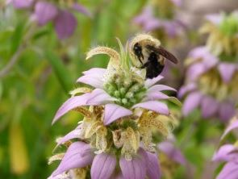

March 14, 2016
Spring into (Native) Planting Season

Getting itchy for spring? For many of us, spring rituals include planning for and planting perennial flowers which will be with us for many seasons to come. However, not all flowers are created equally.
Plants that are native to your region bring more than just beauty, they also provide vital habitat to pollinators and other wildlife. Finley knew this well, and spent many hours exploring the native grasses and wildflowers of her backyard to capture pictures of the tiny insects who found homes there.
Many native plant species also develop deep root systems that allow rainwater to penetrate the soil, replenishing groundwater supplies and minimizing erosion. Once established they tend to be pretty self-sufficient, not needing much in the way of watering or fertilizer.
To learn more, search for your state’s native plant society which probably maintains a list of plants native to your area. If you live in Virginia, check out the Virginia Native Plant Society’s website. They’ve got all kinds of resources like plant lists, helpful blogs (like how to get rid of Japanese barberry!), and lists of native plant nurseries. Personal favorite? The list of 2016 spring plant sales where you’re likely to find plant species unavailable in retail nurseries.